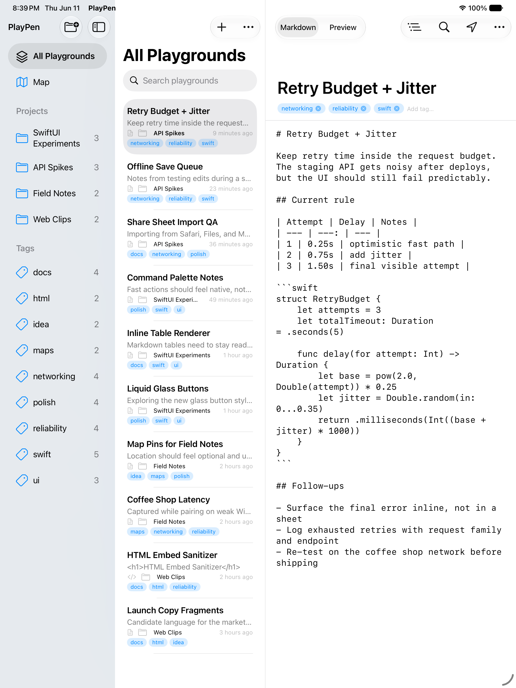
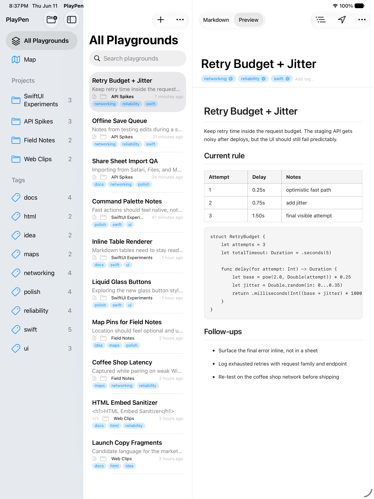

PlayPen
A native workspace for rough notes to become useful again.
Write Markdown or HTML, preview it, tag it, and return to the useful part without building a project around it.
Source, preview, file it.
Write
Capture the real draft: Markdown, HTML, links, code, tables, and half-formed structure.
Preview
Switch between source and rendered output while the library stays in view.
Find
Use projects, tags, outline, search, and annotations when the note needs context.


Everything stays close to the note.
PlayPen keeps the system chrome quiet: direct controls, readable type, native split view behavior, and nothing ornamental between you and the experiment.
Quick enough for spikes
Open, edit, preview, and search without starting a new repo every time a small idea appears.
Organized without ceremony
Projects hold the lanes. Tags keep the useful cross-cuts, from SwiftUI to networking.
Annotated when it helps
Add provenance, review notes, or agent handoff context without extra permission prompts.
Screens from the live build.
The product imagery is based on a running PlayPen app. These screenshots are captured from the same source and preview states shown in the hero devices.
Keep the useful parts.
PlayPen gives experiments a native home, so the next idea starts faster.